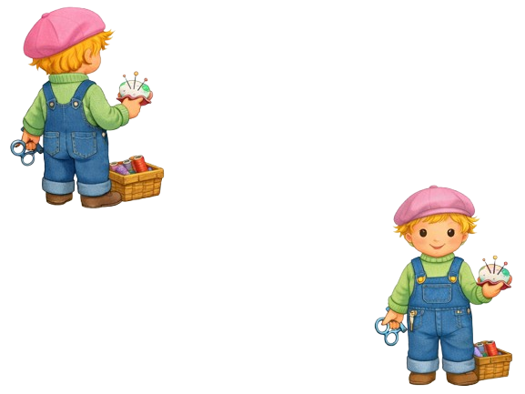

Couture & Broderie
Astuces et conseils pour la couture, la broderie, le tricot, le patchwork et les loisirs créatifs.
➕ Proposer une astuce Couture & Broderie
Couture & Broderie
Astuces et conseils pour la couture, la broderie, le tricot, le patchwork et les loisirs créatifs.